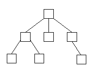

|
| ||
|
| ||
Rebecca Norlander
Rebecca Norlander
Microsoft Corporation
Updated March 18, 1999
The following article was originally published in Site Builder Magazine (now known as MSDN Online Voices).
As the Web continues to evolve into the next great application platform, the power of dynamically manipulated content on the client machine becomes more important in creating truly interactive experiences. The World Wide Web Consortium (W3C) Document Object Model (DOM) is a step in the evolution of the ways we manipulate elements on a page, whether it's creating, inserting, modifying, moving, or deleting. The combined power of Internet Explorer's object model, its support for Dynamic HTML (DHTML), and its support of the W3C DOM mark a great advance toward making Internet Explorer a powerful application development platform for the Web.
This article focuses on using the DOM through script on HTML files; the DOM is also accessible through a set of COM Interfaces. While you could accomplish many of the things I'm going to discuss in browser versions previous to Internet Explorer 5, they previously required a lot more developer knowledge, ingenuity, and -- above all -- time than they now do.
Rather than attempting to cover the entire DOM, I will highlight a few of its fundamental concepts, and help you get started with some samples. First, however, familiarize yourself with the terminology; check out the expandable item at left, DOM talk: Terminology defined.
Now that I have introduced the Document and its major family members, let's talk about their relationship. The Document is the starting point for all of the fun. Think of the Document as the root node of an n-ary ree that represents (in this case) an HTML document. Perusing the document is conceptually like walking a tree in C (pick your programming language), with interfaces that are customized towards HTML and its subsequent manipulation (remember that this applies to XML documents as well).
If the Document is the root, Elements make up most of the "children." As in any family tree, there are parents, siblings, and children. Elements have their own properties, called Attributes, which in HTML Documents are simple strings.

Figure 1: A simple family tree
The diagram could represent a person's family tree. There's a parent, the parent has children, and some of those children have children as well. If you think of it in terms of a simple document, the document is represented by the top parent node, and it, in turn, has child nodes. Some of those child nodes also have child nodes. Now we're ready to party -- let's walk the tree.
Here are a few methods on the Document interface that we can play with (Note: This is not the entire Interface. The complete DOM Interfaces can be found on the W3C Website).
can be found on the W3C Website).
interface Document : Node {
Element createElement(in DOMString tagName)
raises(DOMException);
Text createTextNode(in DOMString data);
};
interface Node {
readonly attribute DOMString nodeName;
readonly attribute DOMString nodeValue;
Node insertBefore(in Node newChild,
in Node refChild)
raises(DOMException);
Node replaceChild(in Node newChild,
in Node oldChild)
raises(DOMException);
Node removeChild(in Node oldChild)
raises(DOMException);
Node appendChild(in Node newChild)
raises(DOMException);
};
In the sample below, I create a <DIV>, a DOM textNode, and a <BR>, and insert them into the current Document.
function CreateSomeElement() {
var newElem1, newElem2, newText, parentElem;
// keep track of the number of times the user
// created a new element (div); gNumClick is a global.
gNumClick+=1;
parentElem = document.body;
// create a new DIV and BR
newElem1 = document.
createElement("DIV");
newElem2 = document.
createElement("BR");
// Add some text to give feedback to the user
newText = document.
createTextNode("This is the "+gNumClick+" DIV that you created");
// insert the textNode as a childNode of the div
newElem1.
insertBefore(newText, null);
// use existing convention to assign an ID to the div
newElem1.id = gNumClick;
// insert the new DIV and BR at the end of the document
parentElem.
insertBefore(newElem1, null);
parentElem.
insertBefore(newElem2, null);
}
Here's the demo in which a <DIV>, a DOM textNode, and a <BR> are inserted into the current Document. Note: This demo requires Internet Explorer 5  .
.
While this isn't the most exciting demo, it does show you how to use several of the basic DOM methods to create an interactive page. The interested DOM explorer can click a button, and in response, DIVs are created, appearing immediately on the page. Also, the user can choose to see the new document that he or she has created by clicking another button that uses the DOM to create a TEXTAREA, and then uses outerHTML to populate it with the modified Document. Note that the DOM does not specify a way to create an entire new document, or persist a document to disk. You'll need to use existing conventions to do that. Here is the code that shows the modified document in the TEXTAREA:
function ShowMe() {
var newElem3, newElem4, parentElem;
parentElem = document.body;
//create a TEXTAREA and a textNode
newElem3 = document.
createElement("TEXTAREA");
newElem4 = document.
createTextNode("The HTML document with the elements you created:");
// use a different DOM method - this one
// appends the new element after the parent's last child
parentElem.
appendChild(newElem4);
parentElem.
appendChild(newElem3);
// set attributes directly on HTML elements
newElem3.value = parentElem.outerHTML;
newElem3.style.height = "120pt";
newElem3.style.width = "300pt";
newElem3.style.color = "blue";
}
Let's imagine there's a comic-book convention next week, and you're ready to have your extensive collection appraised. You're also thinking about selling a bunch of your comic books in favor of buying some of your wish-list items. You've got a database into which you've meticulously entered your entire collection. You'd like to create a Website so your friends and fellow collectors can see what you've got, sort by title, find out if they'd like to initiate a swap or a buy. You can easily dump your database into a table -- you've done that in Internet Explorer 4.0 -- but it wasn't as easy to sort the table on the fly.
Below, using the DOM, the table is sorted by comic book title.
// set up the onclick handler on the button
<input type=button value="Sort By Comic Title"
onclick="insertionSort(Table1.children[0], 0,
Table1.rows.length - 1, false)">
// standard insertion sort
function insertionSort(t, iRowStart, iRowEnd, fReverse)
{
var iRowInsertRow, iRowWalkRow;
for ( iRowInsert = iRowStart + 1 ; iRowInsert
<= iRowEnd ; iRowInsert++ )
{
textRowInsert = t.children[iRowInsert].innerText;
for ( iRowWalk = iRowStart ; iRowWalk
<= iRowInsert ; iRowWalk++ )
{
textRowCurrent = t.children[iRowWalk].innerText;
if ( ( (!fReverse && textRowInsert <= textRowCurrent)
|| ( fReverse && textRowInsert >= textRowCurrent) )
&& (iRowInsert != iRowWalk) )
{
eRowInsert = t.children[iRowInsert];
eRowWalk = t.children[iRowWalk];
t.
insertBefore(eRowInsert, eRowWalk);
iRowWalk = iRowInsert; // done
}
}
}
}
Here's a demo of your comic-book table. Note: This demo requires Internet Explorer 5 .
.
How about if your table contained data about your day trades? Using the additional table object model, you could sort the table off whatever key you'd like to use, and, using Dynamic Properties, you could color code the trades against their profit or loss. That would make it easy for you to generate a "day at a glance" table for your customer, yourself, or your manager.
For a look at Dynamic Properties, see Michael Wallent's DHTML Dude column, Be More Dynamic.
To learn about using databinding to fill your table, see Michael's column Getting Your Page's Data into a Bind.
Sorting my comic-book collection was fun and perhaps lucrative for me, but it still doesn't show you the power of combining Internet Explorer, the DOM, and perhaps other new technologies. In the following example, I combine Internet Explorer databinding, DHTML, and DOM features with Vector Markup Language (VML) to create a graph that shows the trend of stock price for a company we'll call MyCorp, Inc.
Let's talk about how to build this. A database would be a likely source of up-to-date information about a company. So, first, we need to bind to data about the company. Second, we want to draw shapes onto a graph that gives a visual representation of the data. We'll do this by leveraging VML's drawing capabilities. Finally, we'll leverage the DOM to create and maintain the VML elements.
Here's the sample source .htm file. And here's the demo. Note: This demo requires Internet Explorer 5  .
.
Everyone has an idea about running a business and making money on the Web. Most involve getting people to order items they need to pay for. By handling business on the Web, the theory goes, your costs are so low that the margins are high no matter what you sell. For your customers to order anything, they'll need a place to order it. Why create an extensive form if you can instead add rows and the like on the fly with the DOM? That way, the user isn't presented with a cluttered interface that shows all the things they can purchase. Perhaps you let them search your database for items, or peruse your site and add items on the fly. Either way, you need to create an order-entry form that allows them to enter items and see the running total.
The sample below shows an ever-expanding order-entry form that allows the user to enter items to be purchased. Note that this sample relies on pre-existing data, the item numbers of which are quite original ("1234," "5678"), but imagine how you could hook this into your corporate application, where you could use a number of methods to allow users to choose items. Notice that the UI is fairly clean, and fills in relevant information as keyed off the entry. Notice also that it tabulates the running total of the purchase.
Here's the order-entry demo. Note: This demo requires Internet Explorer 5  .
.
Ultimately, support for the DOM is all about providing simple interfaces for document manipulation that complement Internet Explorer's new and existing features. While most of the things that I've shown you were possible before, they have become a lot easier and more intuitive as a result of the integration of the DOM into Internet Explorer. So have some fun! Use Internet Explorer 5 to create your next wave of dancing HTML applications and Web pages.
Rebecca Norlander, a seven-year veteran of Microsoft, started as a developer in the Office group, moved to the COM team as a program manager, and, early this year, joined the Internet Explorer Programmability team as a Lead Program Manager. Her overriding interest is in object-model technologies.
Document: The Document, for purposes of this discussion, is an in-memory hierarchy of Node objects that compose an HTML page. The Document is a node with one element: itself.
Node: A Node is the generic type that refers to all the objects that can exist inside a Document. The subset of nodes I talk about here is composed of Elements, Attributes, Text, and the Document itself.
Element: Elements are the things most often encountered while perusing a Document. Elements encompass almost everything but text. They derive from the Node type. Elements contain Attributes, and can be parents to other Elements (as well as TextNodes).
TextNode: TextNodes handle text in the Document.
Attribute: Attributes are essentially properties of Elements, therefore they are not child nodes of elements. Since they are not child nodes of elements, even though they derive from the generic Node type, they do not behave like other Nodes. For example, parentNode, previousSibling, and nextSibling will return NULL if called on an Attribute. Also, they are not a part of the document tree, but belong instead to the element upon which they reside.
N-ary tree: An n-ary tree is like a binary tree, a representation of data in a tree-ike structure, with a root that has children. A binary tree is constrained to two children per any node (hence, "binary"), while an n-ary tree can have nodes with more than two children each. In fact, the number of children isn't constrained at all.
Did you find this material useful? Gripes? Compliments? Suggestions for other articles? Write us!
© 1999 Microsoft Corporation. All rights reserved. Terms of use.